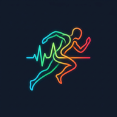

Calibré sur vos sorties Polar • Spectre d'allures, estimations 5k–Marathon & tendance de forme
.TCX / .CSV n'importe où sur la page pour recalculer vos allures.
Détection auto Polar ou saisie suite à un test
Allures calculées dynamiquement selon votre VMA, votre réserve cardiaque (Karvonen) et l'analyse de vos tours Polar
Projections recalibrées en temps réel selon vos allures SV1, Tempo, Seuil/T et SV2
Allure équivalente à fréquence cardiaque normalisée sur chacune de vos séances
Pourcentage du temps passé dans chaque zone sur les séances sélectionnées
Cochez/décochez une séance ou importez un nouveau fichier .TCX / .CSV pour recalculer vos allures
| Incl. | Date & Fichier | Profil / Blocs détectés | Distance & Durée | Allure Moy. | FC Moy / Max | Puissance & Cadence | Action |
|---|